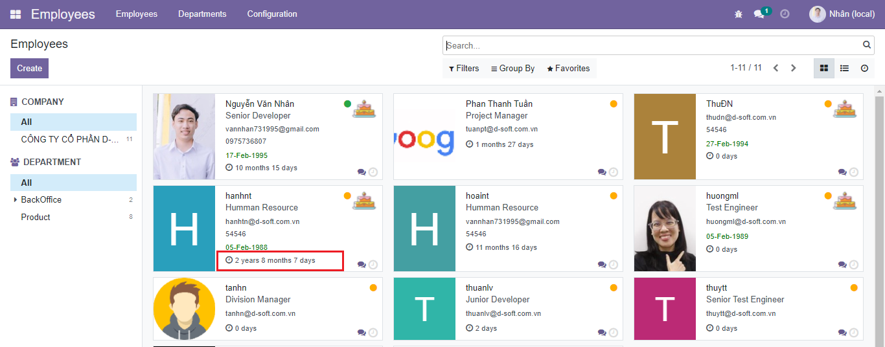
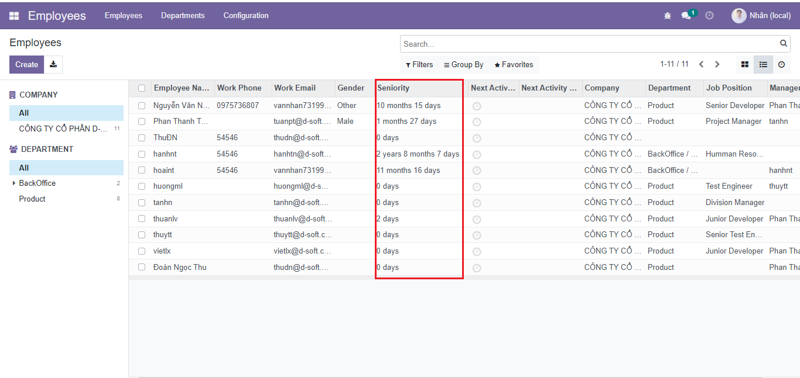

DS Employee Seniority
This module will add feature to Display the Seniority of the Employee.
1. Show Seniority for Employees in the Kaban view.
Select Employee Kanban view. You can see the Employees with seniority is being displayed.
2. Show Seniority for Employees in the list view.
Select Employee List view. You can see the Employees with seniority is being displayed.
